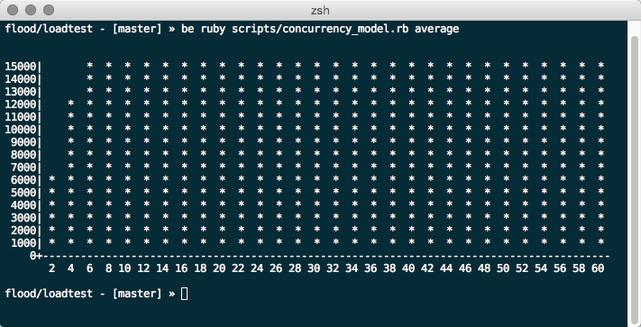
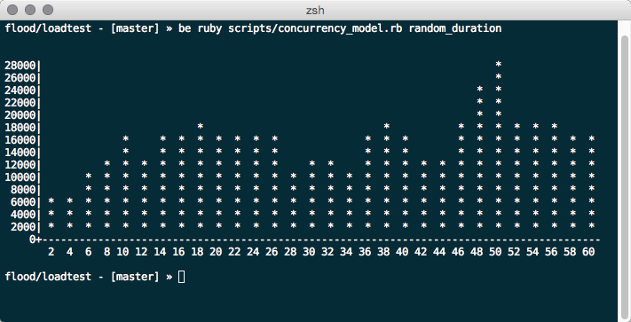
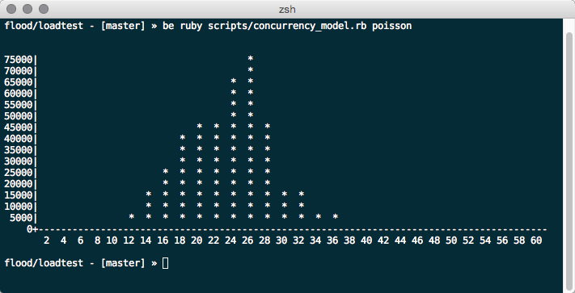

Expectation vs Reality
Expectation
Reality
@tim_koopmans
CTO / Founder Flood IO
Cow Farmer, Child Wrangler & Recovering Load Tester
How to scale from zero to one million requests per second
Be Prepared
- Model
- Measure
- Build
- Decide
A load testing platform
"That doesn't get in the way of load testing"
A Platform That Scales
"Distributed, Loosely Coupled, Shared Nothing"
It Scales Because

Scale on Demand
Fraction of the cost
"Pay for the infrastructure you use"
Read why we think paying per VU is broken
Simulation Model
"A good simulation model is worth a thousand tests"
"Last night we had 180K uniques doing something in the order of 500K requests per minute BUT the business wants us to test up to 1M requests per second for the next big sale event"
Response Time
Concurrency
An "average" way to estimate
180,000 uniques
--------------- = 15,000 concurrent users
( 60 minutes / 5 minutes)
Estimating concurrency
An "average" way to estimate

Estimating concurrency
Random session duration

Estimating concurrency
Poisson Distributed

Estimating throughput
Another "average" method
500,000 requests per minute
--------------------------- = 33 rpm per user
15,000 users
Estimating throughput
We can start to validate business targets of 1M rps 😲
60,000,000 requests per minute
------------------------------ = 4,000 rpm per user
15,000 users
OR maybe ...
60,000,000 requests per minute
------------------------------ = 1.8M concurrent users
33 rpm per user
Uniform Distributions
"They don't exist"